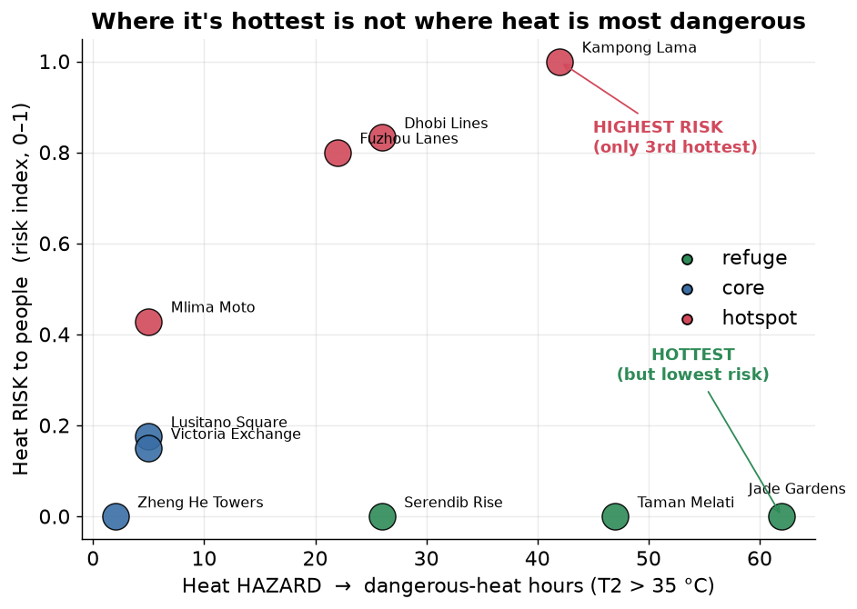
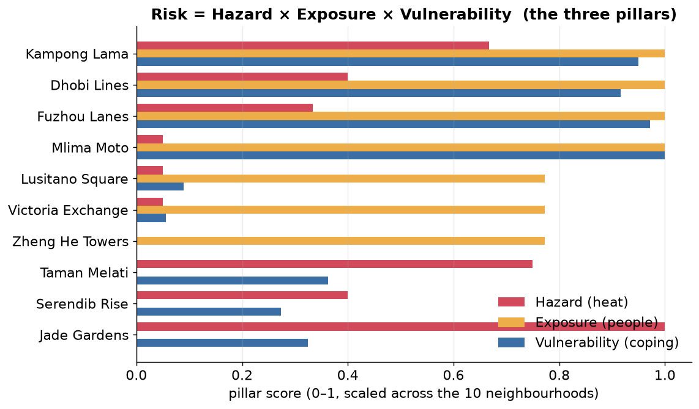

1. Hottest ≠ highest-risk
Hazard and risk are different questions. One is about the air; the other is about the people in it.

Why the divergence? It comes down to urban form:
- Why Jade Gardens is hottest: it is smooth and low-rise. Aerodynamically smooth surfaces mix the air weakly, so daytime heat builds up near the ground — but almost nobody lives there (80 people per hectare, the lowest), and those who do have more air-conditioning and less deprivation. High hazard, near-zero exposure → low risk.
- Why Kampong Lama is highest-risk: it is a dense informal settlement — still genuinely hot, but packed with 300 people per hectare, with only 8% air- conditioning access, 62% outdoor workers, and high deprivation. High on all three pillars of risk at once.
2. The risk table
Risk = Hazard × Exposure × Vulnerability, each scored 0–1 across the ten neighbourhoods and combined as a (deliberately cautious) geometric mean — a near-zero in any one pillar pulls risk down.

| Rank | Neighbourhood | Type | Danger hrs (T2>35°C) |
Hazard | Exposure | Vuln. | Risk index |
|---|---|---|---|---|---|---|---|
| 1 | Kampong Lama | hotspot | 42 | 0.67 | 1.00 | 0.95 | 1.00 |
| 2 | Dhobi Lines | hotspot | 26 | 0.40 | 1.00 | 0.92 | 0.83 |
| 3 | Fuzhou Lanes | hotspot | 22 | 0.33 | 1.00 | 0.97 | 0.80 |
| 4 | Mlima Moto | hotspot | 5 | 0.05 | 1.00 | 1.00 | 0.43 |
| 5 | Lusitano Square | core | 5 | 0.05 | 0.77 | 0.09 | 0.18 |
| 6 | Victoria Exchange | core | 5 | 0.05 | 0.77 | 0.06 | 0.15 |
| 7= | Jade Gardens | refuge | 62 | 1.00 | 0.00 | 0.32 | 0.00 |
| 7= | Taman Melati | refuge | 47 | 0.75 | 0.00 | 0.36 | 0.00 |
| 7= | Serendib Rise | refuge | 26 | 0.40 | 0.00 | 0.27 | 0.00 |
| 7= | Zheng He Towers | core | 2 | 0.00 | 0.77 | 0.00 | 0.00 |
Take-away for action: the four hotspot settlements carry essentially all of the people-risk. The hottest refuge areas are a heat-management issue, not a life-safety priority — provided they stay sparsely populated.
3. What humidity and a +2.5 °C future change
Humidity makes everywhere more dangerous — but doesn't change who's worst
A dry-bulb 35 °C threshold understates danger in a city at ~81% humidity. Re-scoring the hazard with humid-heat measures (apparent temperature and wet-bulb) shows every neighbourhood endures 90–265 hours of dangerous humid heat (wet-bulb above 28 °C) — far more alarming in absolute terms. But because humidity is near-uniform across the city, it lifts everyone together: the risk ranking does not change. One caution we learned the hard way — switching to apparent temperature without also raising the threshold makes it "dangerous almost always" and destroys the signal; the metric and its threshold must move together.
+2.5 °C warming multiplies the hazard ~8-fold

Under the warmer future the people-risk ranking is stable (only a minor 2↔3 swap), because uniform warming raises hazard everywhere while exposure and vulnerability are unchanged. The message is not "the map reshuffles" — it's "the same places get far more dangerous, and the highest-risk settlements stay highest-risk."
4. A targeted intervention: cool roofs + street greening
We tested one concrete action on the three highest-risk settlements: brighten the roofs and pavements (reflect more sun) and convert some paved/bare ground to grass and trees (add evaporative cooling).

It works on the physics. Reflective surfaces cut the absorbed sunlight, greening adds evaporative cooling, and together the sensible heating of the air falls by about a quarter — which is what cools the street. Dangerous-heat hours drop 42→17 (Kampong Lama, −60%), 26→9 (Dhobi Lines, −65%) and 22→6 (Fuzhou Lanes, −73%).
5. Where this bridge holds — and where it breaks
The honest part. This pipeline is a decision aid, not an oracle. Here is where to trust it and where not to.
✓ Where it holds
- The headline is robust. Hottest ≠ highest-risk survives every humid-heat metric and the +2.5 °C future — it is a structural feature of the city, not an artefact of one threshold.
- Relative ranking of the hotspots is stable and physically explainable (form → mixing → heat; density + low coping → risk).
- The physics of the intervention is sound and traceable to the surface energy balance (less absorbed sun, more evaporation, less sensible heat).
- Direction of travel — who to prioritise, and that warming worsens the same places — is trustworthy.
✗ Where it breaks
- It is an environmental hazard, not a health outcome. Hours above a temperature are a proxy for danger, not a prediction of illness or death.
- The socio-economic layer is synthetic. Read ranks, never absolute numbers; these are plausible magnitudes, not survey data for a real place.
- Relative (min–max) scaling doesn't transfer and hides progress — it inflates the apparent risk of untouched areas when the worst case improves, and pins sparsely-populated places at zero risk no matter how hot they get.
- District averages hide individuals — the most exposed people inside a "low-risk" area are invisible here.
- The future is a pseudo-warming stress test, not a downscaled climate projection; and the greening benefit assumes the vegetation is kept watered.
- A dry-bulb threshold is the wrong default for a humid city — use a humid-heat measure, and move the threshold with the metric.